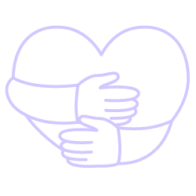
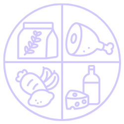
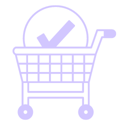

The joy of sharing is our passion
Harvest Share is a movement of like-minded people who relish and practice
the value of living more sustainably.
That could be anything from connecting to source eggs from the backyard
down the road, collecting veggies from the next suburb, or sharing
gardening equipment with neighbors. But we start with the first step -
sharing the harvest, which, for some reason, the household is not able to
consume themselves and would otherwise throw away. Besides that, here at
Harvest Share, our mission revolves around helping individuals like you
foster connections and enrich your local neighborhood. Our platform serves
as the ideal meeting ground for like-minded people. Discover individuals
who share your passions and interests, and engage in meaningful
conversations within your community. Before you realize it, a warmer and
friendlier neighborhood begins to flourish. These newfound connections
unite you all through your shared love for delicious food, gardening, and
the joy of resource sharing.
Wasted spare is a lost resource, both in material and value.
  Rules
(Please keep in mind that these guidelines are offered with the best intentions to ensure that everyone benefits. Reach out if any suggestions.)
1. When you reserve an item, please be sure that you can pick it up. This helps prevent fruits and vegetables from going to waste. We understand that unexpected situations can arise, so if your plans change, please notify the other party as soon as possible.
2. Time is a precious resource. Let's respect each other's time.
3. Acts of kindness and goodwill drive our platform. This isn't about work or providing a service.
4. While there's nothing wrong with expressing gratitude for someone's generosity, we encourage you to remember our philosophy: givers don't expect anything in return. Sometimes, giving material items to someone you don't know might create unnecessary waste if the person doesn't need the gift. A kind gesture, politeness, and a smile can be just as valuable in return.
5. Please read post descriptions carefully before making any commitments.